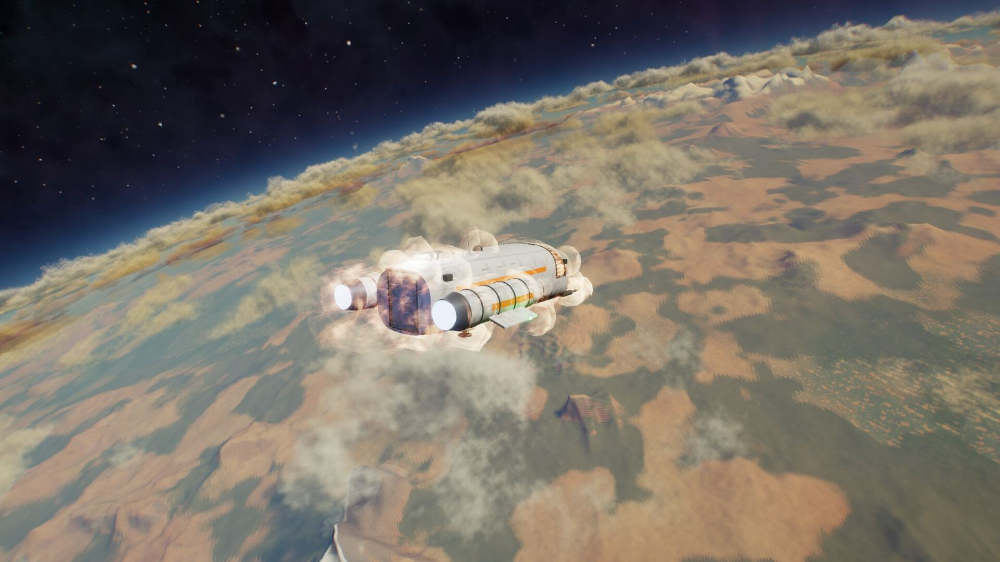
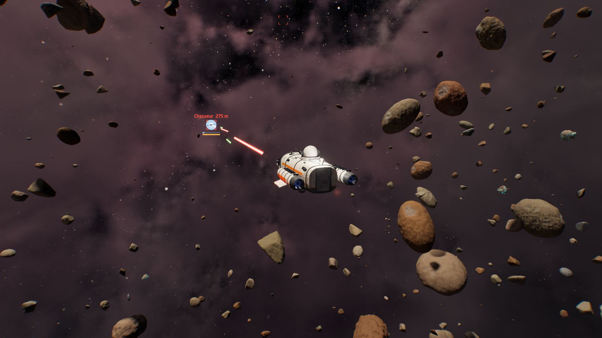
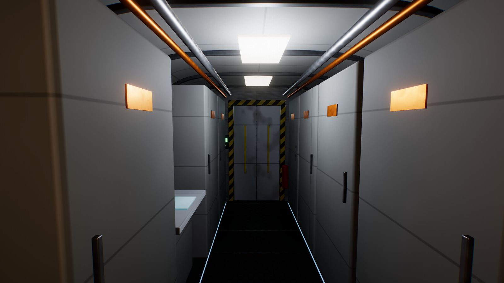

Waymaker
Pilotez un vaisseau d’occasion au-delà des étoiles cartographiées. Plongez de l’orbite à travers les nuages d’un monde sans nom, posez-vous où vous voulez et sortez par le sas. Relevez ses fleuves, ses grottes et ses espèces, nommez-le, revendiquez-le… ou allez trop loin pour en revenir.
Bande-annonce Waymaker
Au-delà de la dernière route de saut, la carte est blanche.
La colonisation de l’espace n’a qu’une génération. La Compagnie paie des éclaireurs indépendants pour passer les premiers : relever les systèmes, baliser les concessions, nommer ce qu’ils trouvent. Les convois suivront vos cartes. Vous volez dans un vaisseau d’occasion, avec votre IA de bord et vos dettes pour tout équipage.
Waymaker est en développement, sur son propre moteur. Tout ce qui est montré ici est jouable aujourd’hui ; la liste ci-dessous distingue ce qui existe de ce qui viendra.
Captures






Jouable aujourd’hui (pré-alpha)
- Le vol en cockpit : six axes, inertie, assistance de vol, à la souris ou à la manette.
- Des systèmes stellaires générés procéduralement, reliés par des routes de saut.
- Une descente continue de l’espace au sol, sur des planètes à l’échelle réelle et à l’horizon courbe.
- Cinq types de mondes : désertique, primordial (avec ses îles), glacé, de lave, océanique.
- Le relief, les fleuves, les lacs et les grottes ; la météo et les saisons.
- Une flore et une faune réparties selon le climat, l’altitude et l’eau.
- À pied : dans le vaisseau, même en vol, sur les astéroïdes et sur les planètes ; la plongée sur les mondes océaniques.
- Le rover et la moto, une épave à explorer, des vaisseaux générés que l’on parcourt à pied.
- Le scanner, les jumelles, le carnet de terrain, le minage, la fabrication et les améliorations.
- Des contrats, des courses, des combats contre des vaisseaux et des tourelles.
- La coopération en ligne.
Prévu
- L’histoire : seize missions, et de vieilles balises qu’aucun registre ne connaît.
- Le carnet complet et les succès Steam.
- De nouveaux mondes, toxiques ou de cristal, et de nouvelles espèces.
- Une flotte et des batailles de grands vaisseaux.
- Et, au bout du voyage, un endroit où s’installer.
En bref